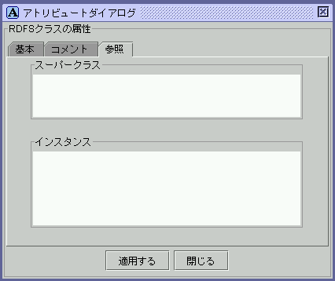

図7: クラスエディタ

図8: アトリビュートダイアログ
(RDFSクラス:基本タブ)
(RDFSクラス:基本タブ)

図9: アトリビュートダイアログ
(RDFSクラス:コメントタブ)

(RDFSクラス:コメントタブ)
図10: アトリビュートダイアログ
(RDFSクラス:参照タブ)
(RDFSクラス:参照タブ)
クラスエディタ内のRDFSクラスを選択すると，RDFSクラスの属性がアトリビュー トダイアログに表示される．RDFSクラスを編集する際には，アトリビュートダ イアログに基本タブ，コメントタブ，参照タブが表示される．基本タブでは， タイプ，URI，rdfs:labelを編集することができる．タイプで選択できる項目 は，設定ダイアログのメタクラスリストタブで追加，削除を行うことができる． コメントタブでは，rdfs:commentを編集することができる．参照タブには，選 択したRDFSクラスのスーパークラスと，そのRDFS クラスをタイプとするRDFリ ソースのリストが表示される．リスト中の項目をクリックすると対応するRDF エディタ内のRDFリソースにジャンプし，そのRDF リソースの属性がアトリビュー トダイアログに表示される．rdfs:labelとrdfs:commentは，xml:lang属性を指 定することにより複数入力できる．